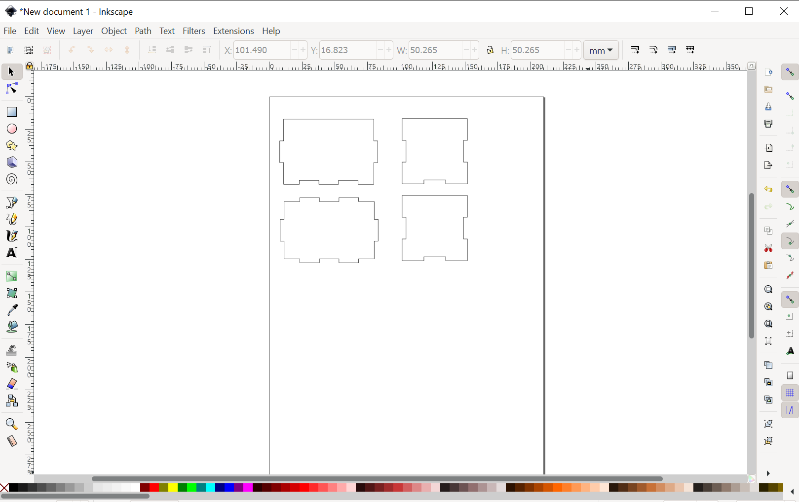
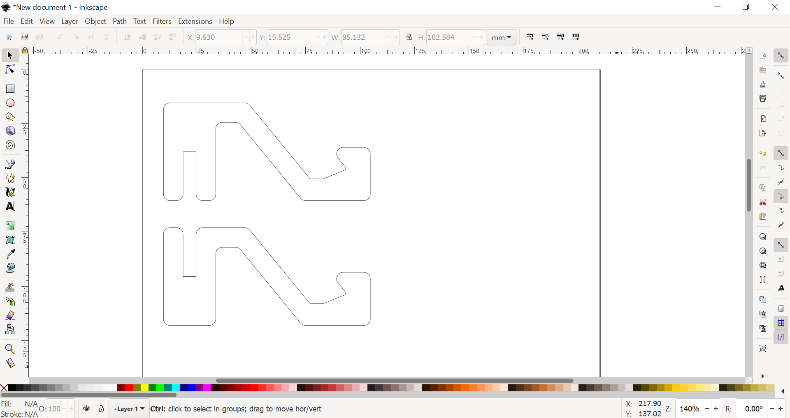
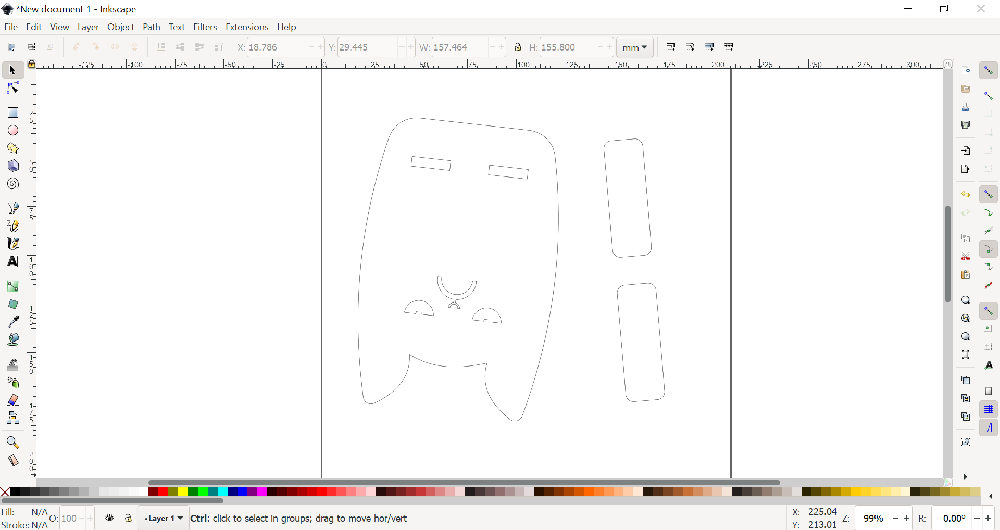
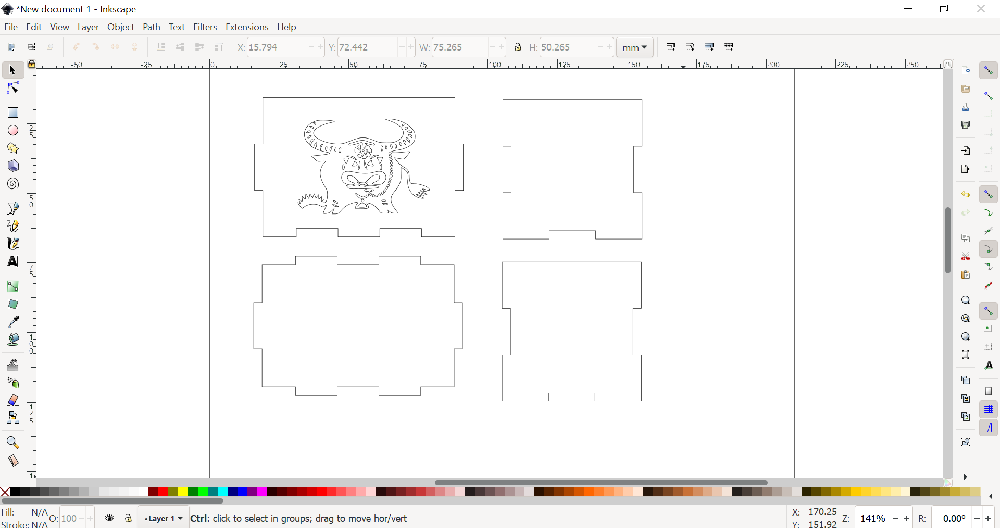

Lasercutting
Box design
(Design period: 30th March 2021 ~ 30th March 2021)
During the 2nd day of the “EA :1st Hands-ON Session”, I followed the steps that were taught by Mr Steven Chew, a Fablab lecturer.
Here is the design of the box after following his steps:
Other Fusion360 projects
Here is a list of my other Fusion360 projects:
1. Smart Phone Stand:
Documentation:
Experience:
2. Cat phone stand:
Documentation:
Experience:
Skills learnt:
Mistake made:
3. Decorative box:
Documentation:
Experience:
Skills learnt:
4. Valentine gift box (unofficial):
4. Documentation:
(Design period: 4th April 2021 ~ 4th April 2021)
In this project, I followed the steps from this website where we are suppose to create the handphone holder from that website as one of our lasercutting assignments.
I found the project manageable and the videos in the website were helpful in my design process.
Here is the design of the Smart Phone Stand:
(Design period: 6th April 2021 ~ 6th April 2021)
In this project, I was intrigued by this cat design phone stand and I decided to design another cat phone stand based on that design.
I found this project quite straightforward and did not have a lot of difficulty.
I learnt to use “Control point spline” together with “Fit point spline”. I had always been using a fit point spline to sketch irregular shapes, and after learning about control point splines, I found it very useful in sketching the sides of the cat.
I forgot about the paw of the cat. I will update a newer version of the design.
Here is the design for the Cat phone stand:
(Design period: 6th April 2021 ~ 6th April 2021)
As for this project, I used the same box design that was mentioned earlier. I copied the file and decided to use that box to create a decorative box design. For my decorative box design, I decided to create a lunar new year themed box that was inspired from this website. As this year is the year of the Ox, I used the image of the Ox instead.
At first, I was not sure how to go about with decorating the box. After watching this Youtube video by Ruben Guscott, I found that it was actually a very simple process to decorate the box in that manner.
I learnt how to insert SVG files into my Fusion360 design and use that for purposes such as decoration.
Here is the design of the decorative box:
(Design period: 6th April 2021 ~ 6th April 2021)
Just like the decorative box where I used the image of the Ox as the decoration, I used the Valentine day logo to replace the Ox. As the design of this box is not like the one from this website, I will be updating this design.
Here is the unofficial design of the valentine gift box:
Importing sketch to Inkscape
As part of the whole process of lasercutting, importing sketches to softwares such as CorelDRAW is the next step after designing in Fusion360. For these projects, I used the Inkscape software instead as it is free.
To produce an SVG file from Inkscape, I saved the relevant sketches in Fusion360 and saved it as a DXF file before importing the DXF file to Inkscape.
Here are the screenshots of the SVG files for the above-mentioned projects:
1. Box:

2. Smart Phone Stand:

3. Cat phone stand (will be updated):

4. Decorative box:

Enjoy!